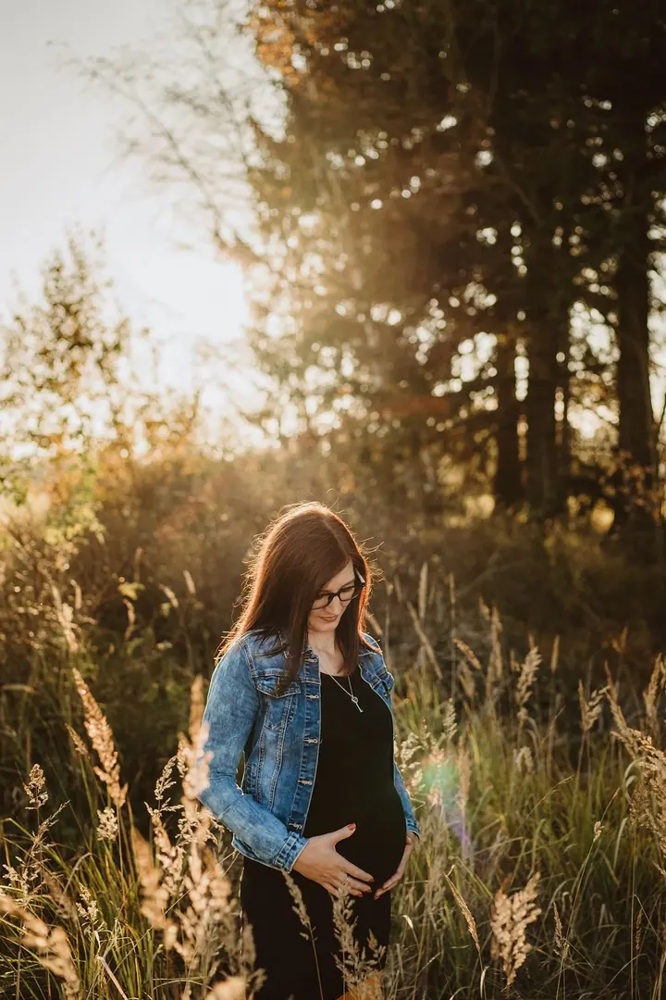
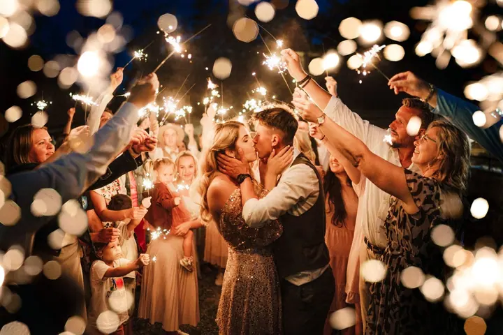

Svatební focení
Pro pohodové snílky a milovníky emocí. Každá svatba je pro mě soubor silných okamžiků o lásce, rodině a pocitech, které nejdou slovy popsat.

Jmenuji se Veronika Kovačková, ale klidně mi říkejte Verča. Jsem svatební a rodinná fotografka ze Žďáru nad Sázavou a už víc než 15 let fotím svatby, rodiny i maminky v …
Rezervovat termínNarodila jsem se v srdci Vysočiny a jsem blázen do lásky. Jsem máma dvou synů a manželka a každé ráno mě budí moji dva kluci. Právě ty vzácné chvíle doma jsou mojí hnací silou dokumentovat pouta mezi ostatními.


Fotkami jsem byla obklopená od miminka díky mamince, strejdovi a dědovi. Pamatuju si vyvolávání fotek v temné komoře u babičky a svůj první film, kdy jsem asi v sedmi letech fotila ségru na louce u baráku. Když se dívám skrz hledáček, vidím svět jinýma a přesto pořád svýma očima.
Nefotím škatulky ani dokonalost. Nejradši nechávám dění jen tak plynout: lásku v dotecích, smích, cákání v kalužích, válení sudů v trávě a vítr ve vlasech. Udělám všechno pro to, aby pro vás focení bylo krásným zážitkem, na který budete rádi vzpomínat.
Co fotím
Pro pohodové snílky a milovníky emocí. Každá svatba je pro mě soubor silných okamžiků o lásce, rodině a pocitech, které nejdou slovy popsat.
Asi hodinová procházka v přírodě Žďárských vrchů před západem slunce. Bez úsměvů na povel, s prostorem pro děti a pro to hezké, co je mezi vámi.
Focení bez stresu a dlouhého pózování, venku, samotná nebo s partnerem. Provedu vás hrou drobných interakcí, ať si odnesete skutečné pohledy a doteky.
Klidné focení prvních společných chvil s miminkem. Žádné aranžování, jen blízkost a něha, jak opravdu vypadá.
Postup
Vyplníte jednoduchý formulář a já vám pošlu kalendář s volnými termíny a všechny důležité informace. Když budete chtít, dáme si krátký seznamovací videohovor.
Po rezervaci dostanete mého průvodce s tipy na přípravu dětí i partnera a na to, co si vzít s sebou. K dispozici máte i můj klientský šatník.
Vybereme místo v okolí Žďáru, kde vám bude dobře, a vyrazíme ideálně hodinu před západem slunce. Budeme se procházet, povídat a smát, žádné postávání v řadě.
Fotky vám pošlu v online galerii, kde si je pohodlně vyberete i z mobilu.
Otázky
Nejčastěji venku na louce, u lesa nebo u rybníka v přírodě Žďárských vrchů. Mám svá oblíbená místa, ale klidně vyrazíme i tam, kde to má pro vás zvláštní význam.
Nemusíte obíhat obchody. Můžete využít můj klientský šatník s kousky pro maminky i univerzálními kousky pro děti a já vám pomůžu sladit i to, co máte doma.
Jako máma vím, že děti potřebují prostor a volnost. Focení probíhá hrou a v pohybu, děti klidně můžou běhat a objevovat a nic nelámu přes koleno.
Svatební focení začíná na 9 000 Kč, rodinné focení a portréty na 2 000 Kč. U svatby mi stačí vyplnit nezávaznou poptávku a připravím vám nabídku na míru.